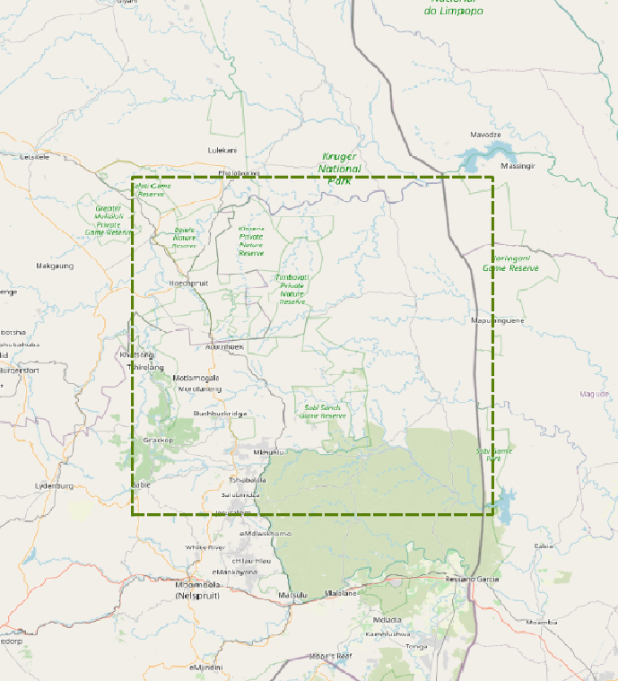
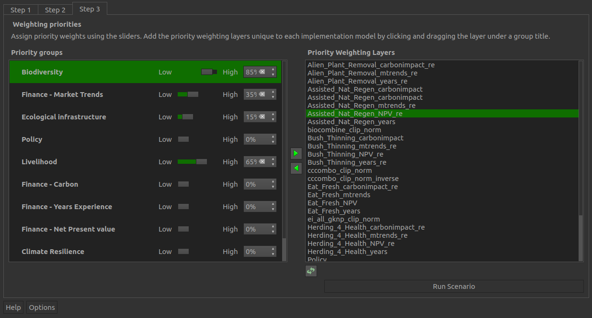
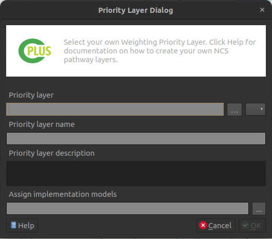
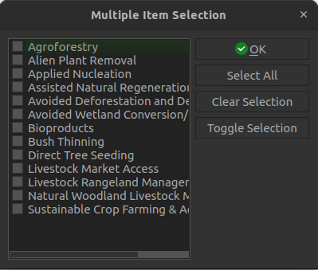
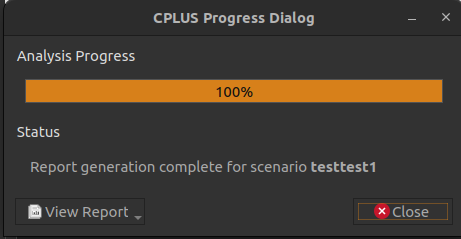
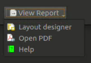

Manual
Detailed descriptions for each UI element of the plugin. This covers steps 1 to 3, dialogs, and the settings UI.
Dock widget
This is the main UI of the plugin. The dock widget opens on the right side of QGIS. The dock widget consist of three tabs, each focussing on a particular phase of the analyis. Here is a short description of those steps:
- Step 1: Scenario information
- Step 2: NCS pathways and Implementation models
- Step 3: Weighting priorities
Step 1: Scenario information

Figure 1: Step 1 of the dock widget
Step 1 allows a user to set up the scenario details and parameters.
- Scenario name: This title will be used throughout the processing, will be used for the groups added to the QGIS canvas, and in the generated report
- Scenario description: A detailed description of the scenario the user will be running. This information will be added to the final report
- Extent: The area of interest (AOI) for analysis. Any spatial data outside this region will be ignored
- Map Canvas Extent: The AOI will be the current extent the user has in QGIS
- Draw on Canvas: Allows the user to manually draw the AOI
- Zoom to Pilot Area: Zooms to the Bushbuckridge pilot study area

Step 2: NCS pathways and Implementation models
Step 2 focuses on the implementation models (IMs) and pathways.
Figure 2: Step 2 of the dock widget
- NCS pathways: Pathways which can be added to IMs. Multiple pathways can be added to each IM
- Implementation models: Each selected model will be created in used to perform the analysis
- Description: A description of the IM or pathway selected
 : Add the selected pathway to the selected IM
: Add the selected pathway to the selected IM : Adds all pathways to the selected IM
: Adds all pathways to the selected IM : Add a new IM
: Add a new IM : Remove the selected IM or pathway
: Remove the selected IM or pathway : Edit the selected IM
: Edit the selected IM
Implementation Model Editor dialog
Figure 3: Implementation model editing/adding dialog
- Name: The name of the new IM or IM being edited. IM title will be used in the report
- Description: A detailed description of the IM. This will be used in the report
- Map layer: If enabled, a user can provide an existing IM. This has to be a raster
Step 3: Weighting priorities

Figure 4: Step 3 of the dock widget
- Priority groups: Groups to which PWLs can be assigned
- Priority weighted layers (PWL):
- : Remove the selected PWL from the priority group
 : Add the selected PWL to the selected priority group
: Add the selected PWL to the selected priority group- : Add a new PWL
- : Remove the selected PWL
- : Edit the selected PWL
- Run Scenario: Starts running the analysis. The progress dialog will open when the user clicks this button
Priority Weighted Layers Editor dialog

Figure 5: Priority layer dialog
- Priority layer: Select the priority layer
- Priority layer name: A unique name for the priority layer
- Priority layer description: A detailed description for the priority layer
- Assign implementation models: Selected IMs associated with the priority layer

Figure 6: Selection of IMs for a custom priority layer
- List of IMs a user can select. Multiple IMs can be selected
- OK: Save the selected models
- Select All: Selects each of the available IMs
- Clear Selection: Deselects each of the selected IMs
- Toggle Selection: Switches each option from deselected to selected, or selected to deselected
Progress dialog

Figure 7: Processing dialog which will show the status of the analysis
- Analysis Progress: Progress of the current step
- Status: A status message on the current analysis being performed
- View Report: This button will remain disabled until the processing is done
- Cancel: Clicking this button will stop the processing
- Close: Only visible once the processing stops. Will close the progress dialog
Report options
These options will be available once the analysis has finished. The options will stay disabled if the analysis failed

Figure 8: Options available to the user related to the generated report
- Layout designer: Opens the report in the QGIS layout designer
- Open PDF: Opens the created PDF
- Help: Takes the user to the Users documentation site
Settings
Figure 9: Settings available to the user
- Reports: Information to be added to the report
- Organization: (optional) Organization or institute name
- Contact email: (optional) Contact email of the user
- Website: (optional) Link to website of your company or institute
- Custom logo: (optional) If enabled, the user needs to provide a custom logo. Most formats should suffice (png, jpeg, etc.)
- Logo preview: Visual previre of the default CI logo, or the custom logo a user selected
- Footer: (optional) Will be added to the report
- Disclaimer: Change as desired, otherwise use the default disclaimer
- License: Change as desired, otherwise use the default license description
- Advanced:
- Base data directory: Directory to read data from, and to which results will be written
- Coefficient for carbon layers: Applied to carbon layers during processing
- OK: Apply and save settings
- Cancel: Any changes to the settings will not be saved